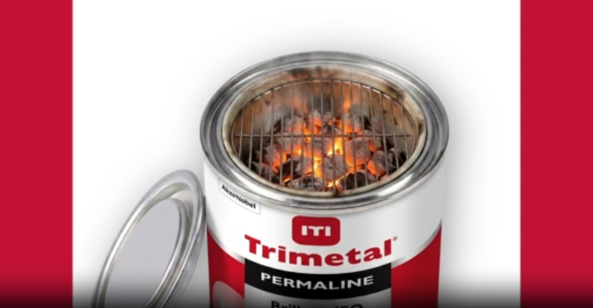
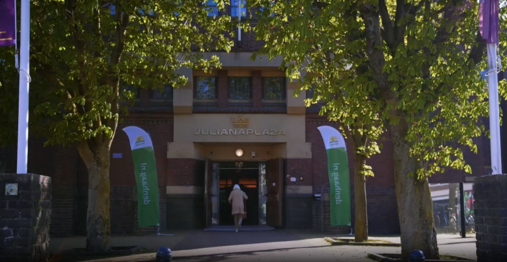
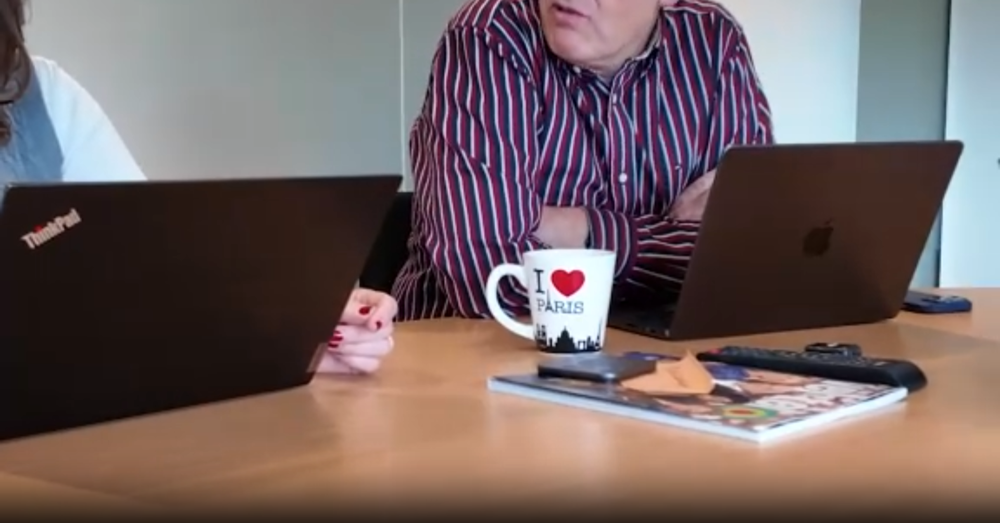
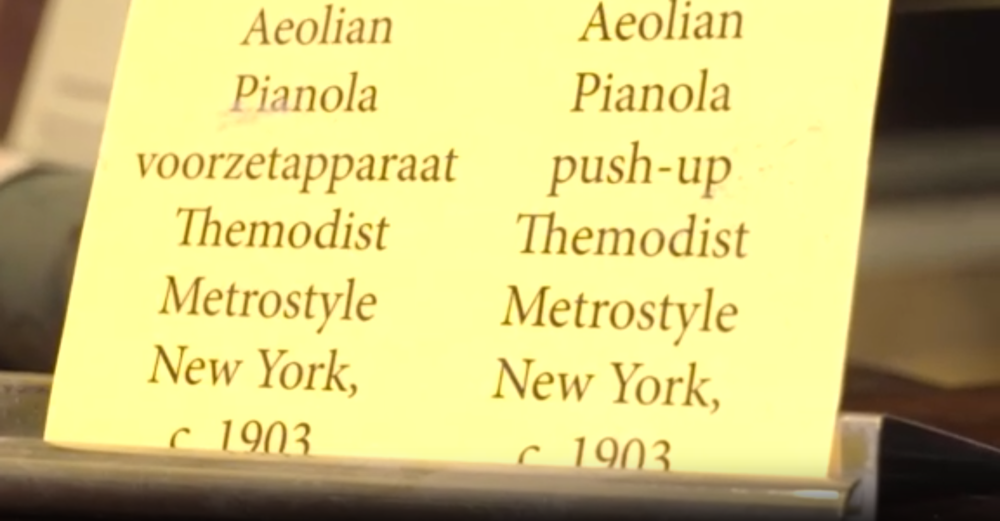
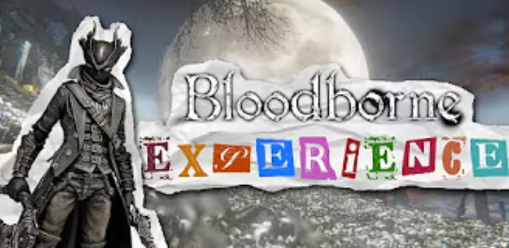
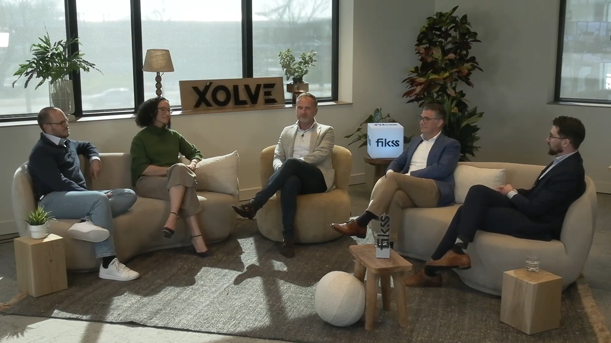
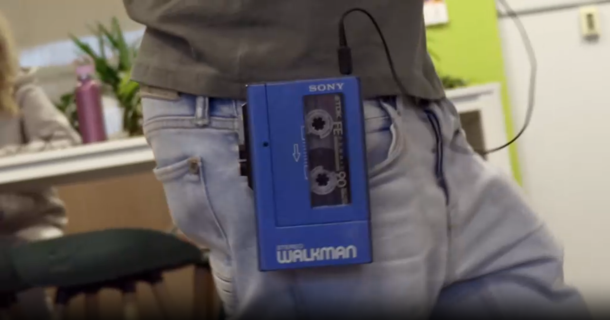

All Projects

Socials Trimetal
Studio Bocavista · Editor & Colourist
Social media content created for paint company Trimetal using DaVinci Resolve. This included motion graphics for short posts and UGC compiled from product users' footage.

Sfeerimpressie Aardgas bijeenkomst
Studio Bocavista · Editor & Colourist
A mood video capturing the atmosphere of multiple evening presentations held by the Municipality of The Hague about making the city natural gas-free. Edited and colour graded in DaVinci Resolve.

Willekeurige taken zonder categorie
KRO-NCRV · Editor
A collection of miscellaneous editing tasks — all videos in this category were edited from provided footage, covering a variety of content types and refining versatile editing skills.

Lief Gebaar
KRO-NCRV · Editor
Social media reels for "Lief Gebaar," a KRO-NCRV initiative that highlights volunteer work. I edited multiple reels for their social channels in Premiere Pro.

Fotografie
Personal Work · Photographer & Colourist
A collection of photographs taken with my Sony A7SII and various lenses. Each photo receives colour correction in Adobe Lightroom or DaVinci Resolve — showing the before and after of my edits.

Uitgelichte YouTube video's
Personal Work · Editor & Creator
A selection of highlights from my personal YouTube channel, where I talk about games I've played. It's not professional, but it's fun and keeps my editing skills sharp.

Talkshow
Hogeschool Utrecht · Camera Operator
A talk show prepared for ICT company Fikss and their software XOLVE. I handled the camera plan, location visit, preparatory work, and operated the camera focused on the talk show host.

Walkman Reclame
Hogeschool Utrecht · Editor & Filmmaker
A commercial created to practice visual effects techniques including rotoscoping, chroma keying, camera tracking, and motion tracking. I handled filming and editing.